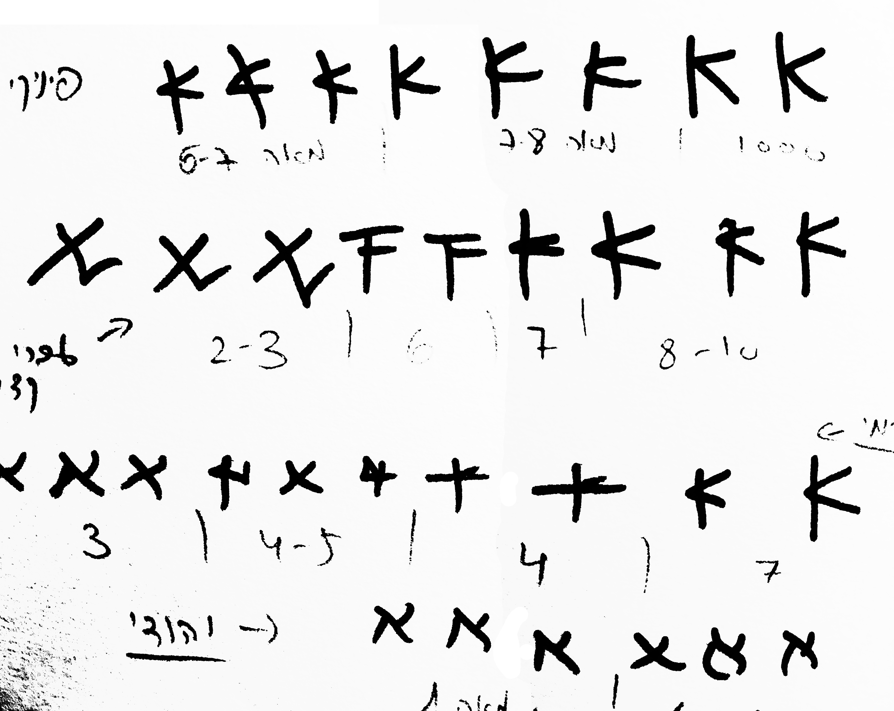
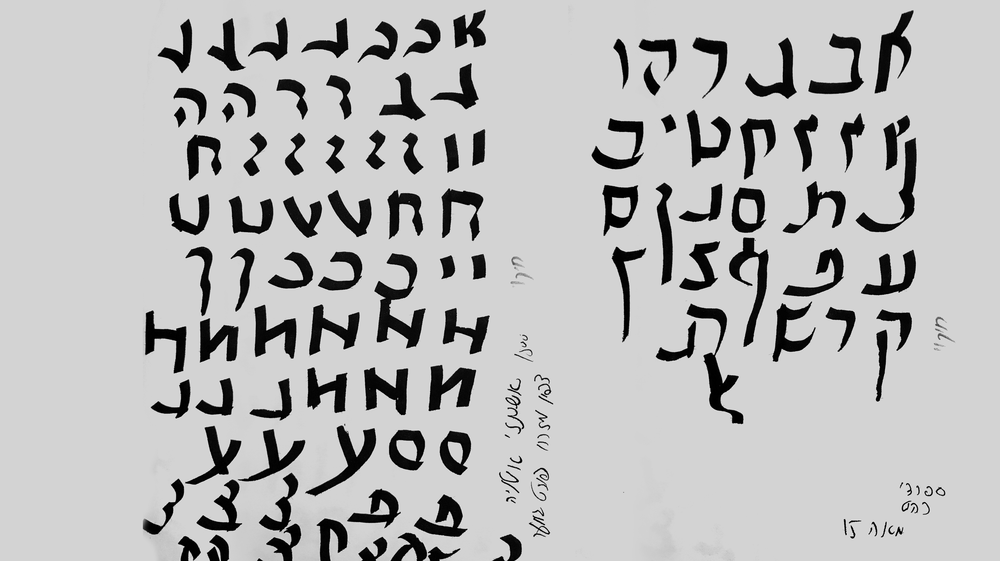

תנואות החל כפרוייקט שנובע מגעגוע אל העבר: אל ילדותי, אל צורת כתיבה שמגלמת בתוכה את מגע היד האישי של הכותב, את תחושותיו ורגשותיו באותו הרגע. יש בה טעויות, יש בה צורות משונות, לעיתים היא אף מאתגרת לקריאה. כאן, בעיני, גלום כל הקסם שבה. ואולי היה מתבקש שאותו געגוע נוסטלגי יקח אותי בחזרה אל המקום הגולמי, אל הקרפט, אל העיפרון. אבל משהו בי דרש עיבוד מחדש, התנתקות כמעט מוחלטת מהטכנולוגיה הידנית, כאילו מתוך התרסה ועצב על מה שעבר ואינו עוד, בניסיון לברוא עולם חדש משלי שמסגל את עצמו לתקופתנו.
לאורך הדרך הוקסמתי ונפעמתי מהמשמעות והתרומה ההיסטורית האדירה של תנועת היד בהתפתחות מסורת הכתיבה היהודית והחלטתי להנציח לא רק את צורת האותיות עצמן, אלא את המעבר כולו. בין תקופה לתקופה, בין צורת אות אחת לאחרת, ניסיתי לחפש את שלבי המעבר. ציירתי בעפרון את הפרשנות שלי לשלבים אלו עבור כל אות ואות מהא-ב. לפעמים הדרך שעשתה תנועת היד היתה ברורה וחד משמעית ולעיתים הייתי צריכה לברוא אותה מחדש. ההשתנות עצמה, אם כך, היא חלק בלתי נפרד מהתהליך.
אותה תנועה ידנית הופכת בתנואות לתנועה אנימטיבית מתוכנתת, שמונצחת בגרסה חדשה של כתב עברי. דייקתי את המעברים בעיפרון עד שהרגשתי שהאותיות מוכנות לעבור אל מסך המחשב שלי, וכך התחיל האתגר האמיתי - ללמוד את הטכנולוגיה שמאפשרת לי לייצר תנועה, ומעבר בין השלבים.